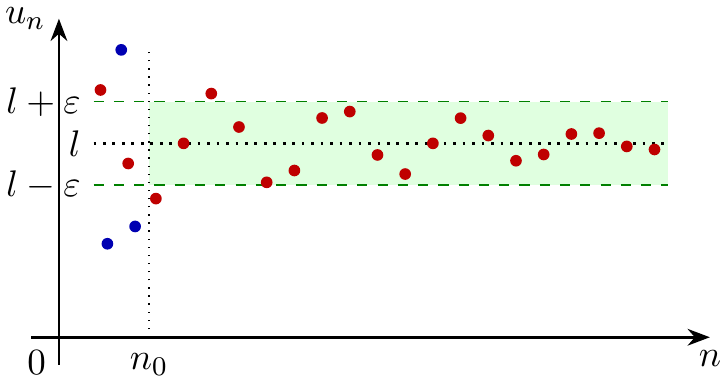
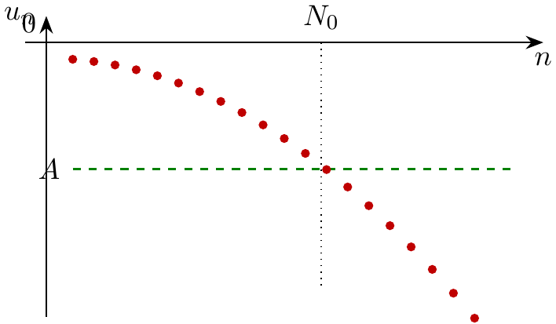
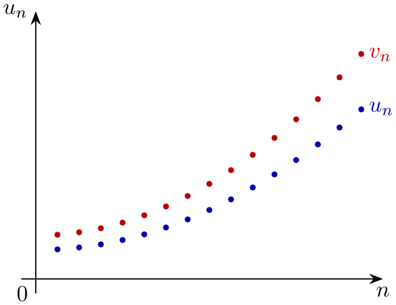

Chapitre 3 : Limite d'une suite
Terminale spécialité · Chapitre 3 — Limite d'une suite · cours de Frederik de Peyrelongue
I. Limites finies
Définition
Une suite $(u_{n})$ a pour limite le réel $l$ lorsque tout intervalle ouvert contenant $l$ contient tous les termes de la suite à partir d'un certain rang.
Autrement dit, pour tout réel $\varepsilon>0$, on peut trouver un rang $N_{0}$ tel que, pour tout $n\geqslant N_{0}$, on a $u_{n}\in\,]l-\varepsilon\,;l+\varepsilon[$, soit encore $l-\varepsilon\leqslant u_{n}\leqslant l+\varepsilon$.

Cette définition signifie que, si $l$ existe, alors, quelle que soit la taille de l'intervalle (aussi petit soit-il), il existe un rang à partir duquel tous les termes vont s'accumuler dans cet intervalle.
Pour tout réel $x$, la partie entière est l'unique entier $n$ tel que
On écrit alors $E(x)=n$ ou $[x]=n$.
Exemple. $[\pi]=3$ ; $[-3{,}5]=-4$ ; $[1{,}95]=1$.
- Une suite convergente est une suite qui a pour limite un nombre réel $l$. On dit aussi que la suite converge vers $l$.
- Une suite divergente est une suite qui ne converge pas.
La suite de terme général $(-1)^{n}$ prend alternativement les valeurs $-1$ et $1$. Elle n'admet donc pas de limite finie : elle est divergente.
Propriétés
Si une suite $(u_{n})$ a pour limite le réel $l$, alors cette limite est unique.
Montrons que $\displaystyle\limn\frac{1}{n}=0$.
Soit $\varepsilon>0$ un réel et $n$ un entier naturel.
Posons $N_{0}=\left[\dfrac{1}{\varepsilon}\right]+1$. Donc
À partir du rang $N_{0}$, $\dfrac{1}{n}\in\,]-\varepsilon\,;\varepsilon[$, donc $\displaystyle\limn\frac{1}{n}=0$.
Montrons que $\displaystyle\limn\frac{1}{n^{2}}=0$.
Posons $N_{0}=\left[\dfrac{1}{\sqrt{\varepsilon}}\right]+1$. Donc
À partir du rang $N_{0}$, $\dfrac{1}{n^{2}}\in\,]-\varepsilon\,;\varepsilon[$, donc $\displaystyle\limn\frac{1}{n^{2}}=0$.
On considère la suite $(v_{n})$ définie pour tout entier $n\geqslant 1$ par $v_{n}=2+\dfrac{1}{n}$.
Montrer que $(v_{n})$ converge vers $2$.
- On considère un réel $\varepsilon$ quelconque.
- On cherche ensuite à déterminer la valeur du plus petit entier $N_{0}$ tel que, pour tout entier $n\geqslant N_{0}$, on a $l-\varepsilon\leqslant u_{n}\leqslant l+\varepsilon$.
Correction.
Soit $\varepsilon>0$ un réel et $n$ un entier naturel non nul.
On résout
Donc il faut choisir pour $N_{0}$ le premier entier au-dessus de $\dfrac{1}{\varepsilon}$, d'où $N_{0}=\left[\dfrac{1}{\varepsilon}\right]+1$.
Conclusion. $\forall n\geqslant N_{0}$, $v_{n}\in[2-\varepsilon\,;2+\varepsilon[$, donc $\displaystyle\limn v_{n}=2$.
II. Limites infinies
Définitions
Une suite $(u_{n})$ a pour limite $+\infty$ lorsque, pour tout réel $A$, l'intervalle $[A\,;+\infty[$ contient tous les termes de la suite à partir d'un certain rang.
Autrement dit, pour tout réel $A$, on peut trouver un rang $N_{0}$ tel que, pour tout entier $n\geqslant N_{0}$, on a $u_{n}\geqslant A$.

Une suite $(u_{n})$ a pour limite $-\infty$ lorsque, pour tout réel $A$, l'intervalle $]-\infty\,;A]$ contient tous les termes de la suite à partir d'un certain rang.
Autrement dit, pour tout réel $A$, on peut trouver un rang $N_{0}$ tel que, pour tout entier $n\geqslant N_{0}$, on a $u_{n}\leqslant A$.

Suites de référence
Montrons que $\displaystyle\limn n=+\infty$.
Soit $A$ un nombre réel ; posons $N_{0}=[A]+1$.
À partir du rang $N_{0}$, tous les termes de la suite sont au-dessus de $A$, donc $\displaystyle\limn n=+\infty$.
Montrons que $\displaystyle\limn n^{2}=+\infty$.
Soit $A$ un nombre réel ; posons $N_{0}=\left[\sqrt{A}\right]+1$.
À partir du rang $N_{0}$, tous les termes de la suite sont au-dessus de $A$, donc $\displaystyle\limn n^{2}=+\infty$.
Si $\displaystyle\limn u_{n}=+\infty$, alors $\displaystyle\limn(-u_{n})=-\infty$.
$\displaystyle\limn u_{n}=+\infty \iff \forall A\in\R,\ \exists N_{0}\in\N,\ \forall n\geqslant N_{0},\ u_{n}\geqslant A \Longrightarrow -u_{n}\leqslant -A$.
En posant $B=-A$, on a $\forall B\in\R,\ \exists N_{0}\in\N,\ \forall n\geqslant N_{0},\ -u_{n}\leqslant B$.
Donc $\displaystyle\limn(-u_{n})=-\infty$.
Propriétés
- Toute suite croissante non majorée a pour limite $+\infty$ quand $n$ tend vers $+\infty$.
- Toute suite décroissante non minorée a pour limite $-\infty$ quand $n$ tend vers $+\infty$.
Soit $(u_{n})$ une suite croissante non majorée et soit $A$ un nombre réel. Comme $(u_{n})$ n'est pas majorée, il existe un entier $n_{0}$ tel que $u_{n_{0}}\geqslant A$.
Or, comme $(u_{n})$ est croissante, pour tout entier $n\geqslant n_{0}$, on a $u_{n}\geqslant u_{n_{0}}\geqslant A$.
Il existe donc un entier $n_{0}$ tel que, pour tout entier $n\geqslant n_{0}$, $u_{n}\geqslant A$, donc $\displaystyle\limn u_{n}=+\infty$.
Démontrer le deuxième cas du théorème précédent : toute suite décroissante non minorée a pour limite $-\infty$.
Montrer que la suite $(u_{n})$ définie pour tout entier naturel par $u_{n}=5n+3$ a pour limite $+\infty$ quand $n$ tend vers $+\infty$.
Correction.
La suite $(u_{n})$ est une suite arithmétique de raison $5$ : elle est donc croissante.
Supposons que la suite $(u_{n})$ soit bornée. Il existe un réel $A$ tel que
c'est absurde.
Donc la suite $(u_{n})$ n'est pas bornée.
Conclusion. $\displaystyle\limn u_{n}=+\infty$.
III. Opérations sur les limites
Limite d'une somme de suites
| $\limn u_{n}=$ | $L$ | $L$ | $L$ | $+\infty$ | $-\infty$ | $+\infty$ |
| $\limn v_{n}=$ | $L'$ | $+\infty$ | $-\infty$ | $+\infty$ | $-\infty$ | $-\infty$ |
| $\limn u_{n}+v_{n}=$ | $L+L'$ | $+\infty$ | $-\infty$ | $+\infty$ | $-\infty$ | F.I. |
* F.I. : forme indéterminée : on ne peut pas prévoir la limite éventuelle.
$\displaystyle\limn n^{2}+n$ :
Or $\displaystyle\limn n^{2}=+\infty$ et $\displaystyle\limn n=+\infty$. D'après la propriété donnant la limite d'une somme :
Limite d'un produit de suites
$\infty$ désigne $+\infty$ ou $-\infty$.
| $\limn u_{n}=$ | $L$ | $L$ | $\infty$ | $0$ |
| $\limn v_{n}=$ | $L'$ | $\infty$ | $\infty$ | $\infty$ |
| $\limn u_{n}v_{n}=$ | $L\,L'$ | $\infty$ | $\infty$ | F.I. |
On applique la règle des signes pour déterminer si le produit est $+\infty$ ou $-\infty$.
Or $\displaystyle\limn\frac{1}{\sqrt{n}}=0$, donc $\displaystyle\limn\left(\frac{1}{\sqrt{n}}+1\right)=1$ (par somme), et $\displaystyle\limn n^{2}=+\infty$, donc $\displaystyle\limn\left(n^{2}+3\right)=+\infty$ (par somme).
D'après la propriété donnant la limite d'un produit :
Limite d'un quotient de suites
$\infty$ désigne $+\infty$ ou $-\infty$.
| $\limn u_{n}=$ | $L$ | $L\neq 0$ | $L$ | $\infty$ | $\infty$ | $0$ |
| $\limn v_{n}=$ | $L'\neq 0$ | $0$ | $\infty$ | $L$ | $\infty$ | $0$ |
| $\limn\dfrac{u_{n}}{v_{n}}=$ | $\dfrac{L}{L'}$ | $\infty$ | $0$ | $\infty$ | F.I. | F.I. |
On applique la règle des signes pour déterminer si le quotient est $+\infty$ ou $-\infty$.
Or $\displaystyle\limn 2=2$, et $\displaystyle\limn n^{2}=+\infty$ donc $\displaystyle\limn-n^{2}=-\infty$, et par somme $\displaystyle\limn-n^{2}-3=-\infty$.
D'après la propriété donnant la limite d'un quotient :
Cas des formes indéterminées
On peut reconnaître les formes indéterminées pour lesquelles il faudra utiliser des calculs algébriques ou d'autres propriétés sur les calculs de limites afin de lever l'indétermination.
Les quatre formes indéterminées sont, par abus d'écriture :
Méthode : lever une indétermination
Déterminer les limites suivantes : a) $\displaystyle\limn n-3\sqrt{n}$ b) $\displaystyle\limn n^{2}-5n+1$.
Correction.
a) $\displaystyle\limn n-3\sqrt{n}=?$
Or $\displaystyle\limn n=+\infty$ et $\displaystyle\limn-3\sqrt{n}=-\infty$.
Il s'agit d'une forme indéterminée du type « $\infty-\infty$ ».
Levons l'indétermination : on factorise par le plus grand terme.
Or $\displaystyle\limn\frac{3}{\sqrt{n}}=0$ donc $\displaystyle\limn 1-\frac{3}{\sqrt{n}}=1$.
Par produit : $\displaystyle\limn n\left(1-\frac{3}{\sqrt{n}}\right)=+\infty$.
Soit : $\displaystyle\limn n-3\sqrt{n}=+\infty$.
b) $\displaystyle\limn n^{2}-5n+1=?$
Or $\displaystyle\limn n^{2}=+\infty$ et $\displaystyle\limn-5n+1=-\infty$.
Il s'agit d'une forme indéterminée du type « $\infty-\infty$ ».
Levons l'indétermination en factorisant par le monôme de plus haut degré :
Or $\displaystyle\limn\frac{5}{n}=0$ et $\displaystyle\limn\frac{1}{n^{2}}=0$.
Donc, comme limite d'une somme : $\displaystyle\limn 1-\frac{5}{n}+\frac{1}{n^{2}}=1$.
Or $\displaystyle\limn n^{2}=+\infty$ et $\displaystyle\limn 1-\frac{5}{n}+\frac{1}{n^{2}}=1$.
Donc, comme limite d'un produit :
Soit : $\displaystyle\limn n^{2}-5n+1=+\infty$.
IV. Limites et comparaison
Théorèmes de comparaison
Soit deux suites $(u_{n})$ et $(v_{n})$.
Si, à partir d'un certain rang, on a $u_{n}\leqslant v_{n}$ et $\displaystyle\limn u_{n}=+\infty$, alors $\displaystyle\limn v_{n}=+\infty$.
Par abus de langage, on pourrait dire que la suite $(u_{n})$ pousse la suite $(v_{n})$ vers $+\infty$ à partir d'un certain rang.

Soit deux suites $(u_{n})$ et $(v_{n})$.
Si, à partir d'un certain rang, on a $u_{n}\geqslant v_{n}$ et $\displaystyle\limn u_{n}=-\infty$, alors $\displaystyle\limn v_{n}=-\infty$.
Méthode : déterminer une limite par comparaison
Déterminer la limite suivante : $\displaystyle\limn n^{2}+(-1)^{n}$.
Correction.
On a : $(-1)^{n}\geqslant -1$, donc $n^{2}+(-1)^{n}\geqslant n^{2}-1$.
Or $\displaystyle\limn n^{2}-1=+\infty$, donc par comparaison,
Théorème d'encadrement
Soit trois suites $(u_{n})$, $(v_{n})$ et $(w_{n})$.
Si, à partir d'un certain rang, on a
alors $\displaystyle\limn v_{n}=L$.
Par abus de langage, on pourrait dire que les suites $(u_{n})$ et $(w_{n})$ (les gendarmes) se resserrent autour de la suite $(v_{n})$ à partir d'un certain rang pour la faire converger vers la même limite.
Ce théorème est également appelé le théorème du sandwich.

Méthode : déterminer une limite par encadrement
Déterminer la limite suivante : $\displaystyle\limn 1+\frac{\sin n}{n}$.
Correction.
On a $-1\leqslant\sin n\leqslant 1$, donc
Or $\displaystyle\limn-\frac{1}{n}=\limn\frac{1}{n}=0$, donc d'après le théorème des gendarmes :
Et donc $\displaystyle\limn 1+\frac{\sin n}{n}=1$.
Remarque. On utilise le théorème de comparaison pour démontrer une limite infinie, et le théorème d'encadrement pour une limite finie.
V. Limite des suites géométriques
Approche intuitive
$a_{n}=1{,}5^{n}$.
La suite $(a_{n})$ est une suite géométrique de raison $q=1{,}5$.
La suite $(a_{n})$ est strictement positive (produit de facteurs positifs).
La suite $(a_{n})$ est strictement croissante : $a_{n+1}=1{,}5a_{n}$, donc $a_{n+1}-a_{n}=0{,}5a_{n}>0$.
Et la suite $(a_{n})$ ne semble pas bornée : je peux la rendre aussi grande que je veux. Elle augmente de $50\,\%$ à chaque itération.
Intuitivement, la suite $(a_{n})$ semble diverger vers $+\infty$.
$b_{n}=0{,}5^{n}$.
La suite $(b_{n})$ est une suite géométrique de raison $q=0{,}5$.
La suite $(b_{n})$ est strictement positive (produit de facteurs positifs).
La suite $(b_{n})$ est strictement décroissante : $b_{n+1}=0{,}5b_{n}$, donc $b_{n+1}-b_{n}=-0{,}5b_{n}<0$.
Et la suite $(b_{n})$ est décroissante et, à chaque itération, diminue de $50\,\%$.
Intuitivement, la suite $(b_{n})$ semble converger vers $0$.
Limite de $q^{n}$
Soit $q$ un nombre réel strictement positif.
- Si $q>1$ alors $\displaystyle\limn q^{n}=+\infty$.
- Si $0<q<1$ alors $\displaystyle\limn q^{n}=0$.
- Si $q=1$ alors $\displaystyle\limn q^{n}=1$.
$\displaystyle\limn 2^{n}=+\infty$ car $q=2>1$ ; $\displaystyle\limn 0{,}3^{n}=0$ car $0<0{,}3<1$.
$(1+a)^{n}>1+na$.
Si $q>1$ : posons $a=q-1>0$, donc $q^{n}=(1+a)^{n}>1+na$.
Posons $u_{n}=1+na$ : la suite vérifie $\displaystyle\limn na=+\infty$ par somme, donc $\displaystyle\limn u_{n}=+\infty$.
Donc $\forall n\in\N$, $q^{n}>u_{n}$ et $\displaystyle\limn u_{n}=+\infty$ ; d'après le théorème de comparaison, $\displaystyle\limn q^{n}=+\infty$.
Si $0<q<1$ : $\dfrac{1}{q}>1$, donc $\displaystyle\limn\left(\frac{1}{q}\right)^{n}=+\infty$.
Par quotient des limites, $\displaystyle\limn q^{n} =\limn\frac{1}{\left(\frac{1}{q}\right)^{n}}=0$.
- Si $q=1$ : $q^{n}=1$ pour tout $n\in\N$, donc $\displaystyle\limn q^{n}=1$.
Limite de la somme des termes d'une suite géométrique
Soit $(u_{n})$ une suite géométrique de raison $q$, avec $0<q<1$. Alors
Posons $S_{n}=u_{0}+u_{1}+\dots+u_{n}$.
$S_{n}$ est la somme des termes d'une suite géométrique de raison $q$, donc
D'après le théorème précédent, $\displaystyle\limn q^{n+1}=0$ car $0<q<1$, donc $\displaystyle\limn 1-q^{n+1}=1$ (par somme) et, en utilisant la limite d'un produit,